Model Quantization
Why LLMs need so much memory
Every layer of a neural network stores two kinds of numbers: weights (the learned parameters, fixed after training) and activations (the values flowing through the network on a given input, different every forward pass). Both are stored as floating-point numbers, and both take memory:
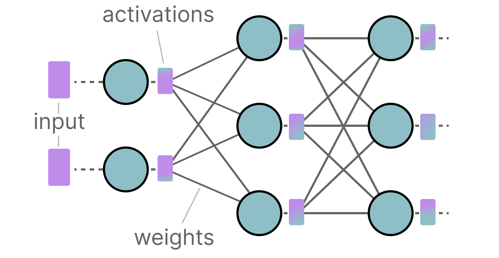
A model with billions of weights means billions of floating-point numbers resident in memory at once — how many bits each number takes is therefore the single biggest lever on how much memory the model needs.
Floating point: sign, exponent, mantissa
A floating-point format splits its bits into three fields (the IEEE-754 standard):
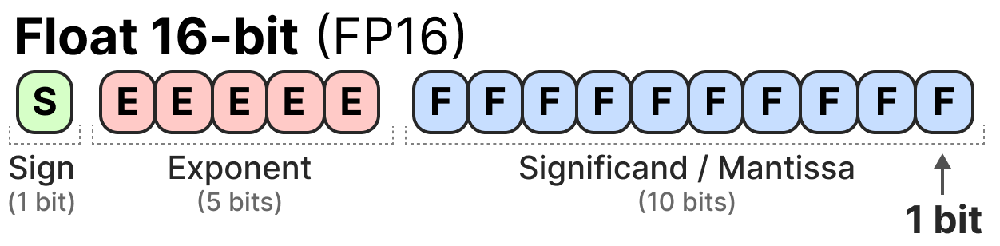
$S$ — the sign bit; $E$ — the exponent field read as an unsigned integer; $\text{bias}$ — a fixed offset so the exponent can represent negative powers of 2, $\text{bias}=2^{e-1}-1$ for $e$ exponent bits; $F_k$ — the $k$-th mantissa bit ($1$ or $0$), $m$ mantissa bits; the leading $1+(\cdot)$ is an implicit bit — never stored, assumed for every normal (non-zero, non-subnormal) number.
Decoding a float: a worked example
Take the FP16 bit pattern below and recover the number it encodes, one field at a time:

| step | computation | result |
|---|---|---|
| sign | $S=0\Rightarrow(-1)^0$ | $+1$ |
| exponent | $E=10000_2=16$, bias $=2^4-1=15$ | $16-15=1$ |
| mantissa | bits $1001001000\Rightarrow 2^{-1}\!+\!2^{-4}\!+\!2^{-7}$ | $0.5703125$ |
| value | $(+1)\times 2^{1}\times(1+0.5703125)$ | $3.140625$ |
The true value $\pi=3.14159265\ldots$ gets rounded to the nearest representable FP16 value, $3.140625$ — an error of about $0.00097$, purely from having only 10 mantissa bits to work with.
Where a format's min and max come from
The largest and smallest representable magnitudes follow directly from how many bits go to the exponent and mantissa. The all-ones exponent is reserved for $\pm\infty$/NaN, so the largest usable stored exponent is $2^{e}-2$; the smallest is $1$ (stored exponent $0$ is reserved for zero/subnormals):
All mantissa bits set (closest to 2), largest usable exponent.
All mantissa bits zero, smallest usable exponent.
| format | sign+exp+mantissa | bias | max | min (normal) |
|---|---|---|---|---|
| FP32 | 1 + 8 + 23 | 127 | $3.4028\times10^{38}$ | $1.1755\times10^{-38}$ |
| FP16 | 1 + 5 + 10 | 15 | $6.5504\times10^{4}$ | $6.1035\times10^{-5}$ |
| BF16 | 1 + 8 + 7 | 127 | $3.3895\times10^{38}$ | $1.1755\times10^{-38}$ |
Min normal has zero mantissa-dependence: it's always $1.0\times 2^{1-\text{bias}}$, mantissa forced to all-zero. Max does depend on the mantissa a little, through the $(2-2^{-m})$ term above — that's exactly why the table shows BF16's max ($3.3895\times10^{38}$) isn't bit-identical to FP32's ($3.4028\times10^{38}$) despite sharing all 8 exponent bits. But $(2-2^{-m})$ only ever ranges between $1$ and $2$ — at most a $2\times$ difference — dwarfed by the exponent's contribution: $2^{127}$ vs $2^{15}$ is a factor of $2^{112}$. So the mantissa can nudge the max by less than 1 bit's worth of magnitude, while the exponent moves it by 112 bits' worth — which is the precise sense in which range is set by the exponent, and FP16's 3-bits-narrower exponent (not its mantissa) is why its max is $65504$, not $10^{38}$.
The max, bit by bit
Concretely, which bit pattern is FP16's max? All mantissa bits set, largest usable exponent, exactly as the previous slide's formula describes:
| step | computation | result |
|---|---|---|
| sign | $S=0\Rightarrow(-1)^0$ | $+1$ |
| exponent | $E=11110_2=30$ (all-1s, $11111$, is reserved for $\infty$/NaN — so the largest usable pattern is one less) | $30-15=15$ |
| mantissa | all 10 bits set: $1111111111\Rightarrow 1023/1024$ | $0.9990234375$ |
| value | $(+1)\times 2^{15}\times(1+0.9990234375)$ | $65504$ |
This is exactly the $6.5504\times10^4$ from the previous slide's table — not a separately quoted constant, but this specific bit pattern, decoded with the same formula used for every other value. One exponent step higher would need the reserved all-1s pattern, which is why $65504$ is the ceiling.
Subnormal numbers: the other reserved exponent
Just as all-1s exponent bits are reserved (for $\pm\infty$/NaN), all-0s exponent bits are reserved too — for numbers smaller than any normal number can represent. When $E=0$, the format switches formulas: the implicit leading $1$ disappears, and the exponent freezes at the smallest normal's value instead of continuing to shrink:
$F$ — the mantissa read as a plain fraction ($F=\sum F_k2^{-k}$, no added $1$). Dropping the implicit $1$ is what lets these values shrink past the normal floor — each step down the mantissa halves the value instead of barely denting it, so precision degrades gracefully instead of the format jumping straight from its smallest normal number to exactly $0$ (gradual underflow). If $E=0$ and $F=0$ too, the value is exactly $0$.
| bit pattern ($S$ $E$ $F$) | computation | value |
|---|---|---|
| 0 00000 1000000000 | $2^{1-15}\times(512/1024)$ | $3.0518\times10^{-5}$ |
| 0 00000 0000000001 | $2^{1-15}\times(1/1024)$ | $5.9605\times10^{-8}$ (smallest subnormal) |
| 0 00001 0000000000 | $2^{1-15}\times(1+0)$ | $6.1035\times10^{-5}$ (smallest normal) |
So FP16's true floor isn't $6.1\times10^{-5}$ — it's $5.96\times10^{-8}$, once subnormals are counted. A value can still be too small even for that: $1.8\times10^{-42}$, coming up shortly, is far below even this subnormal floor, which is why it underflows all the way to $0.0$ rather than landing on a subnormal.
Almost all of $(0,1)$ — $0.5$, $0.1$, $0.001$, down to about $6.1\times10^{-5}$ — is still normal, just with a negative exponent ($0.1=2^{-4}\times1.6$, e.g.). Subnormals only take over in the last, extremely thin sliver right before zero.
Same value, different precision
$\pi$ encoded in FP32 and FP16 side by side — more mantissa bits means the rounded value sits closer to the true one:
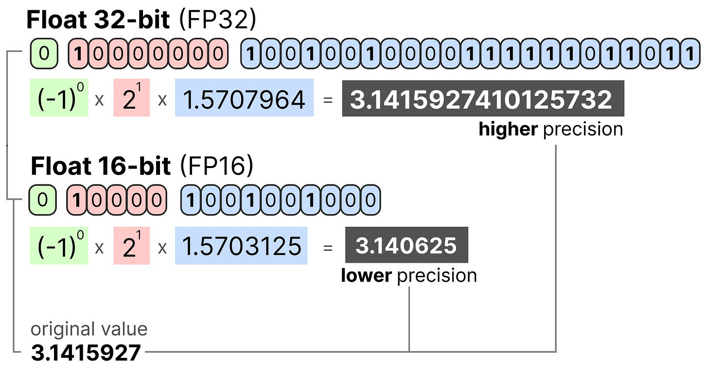
Both use the same $2^{E-\text{bias}}$ term (exponent $=1$ either way); only the fraction changes — FP32's 23 mantissa bits place $\pi$ within $10^{-8}$, FP16's 10 bits within $10^{-3}$.
When a value falls outside the range
Two numbers, cast to progressively narrower formats — one is an ordinary magnitude, the other deliberately tiny:
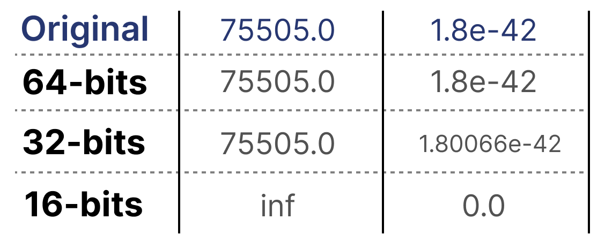
$75505.0$ is an ordinary magnitude — well inside FP32's range, and still fine at FP16's own range... except FP16's max is $65504$ (a few slides back), and $75505.0>65504$. It overflows: there's no representable FP16 value large enough, so it rounds to $+\infty$. $1.8\times10^{-42}$ fails at the opposite end — it's below FP16's minimum normal magnitude ($6.1\times10^{-5}$) and even below FP16's subnormal floor, so it underflows to exactly 0.0. Same failure, two different directions: one value is too big for the range, the other too small.
Dynamic range vs. precision
Two separate properties of a format, easy to conflate:
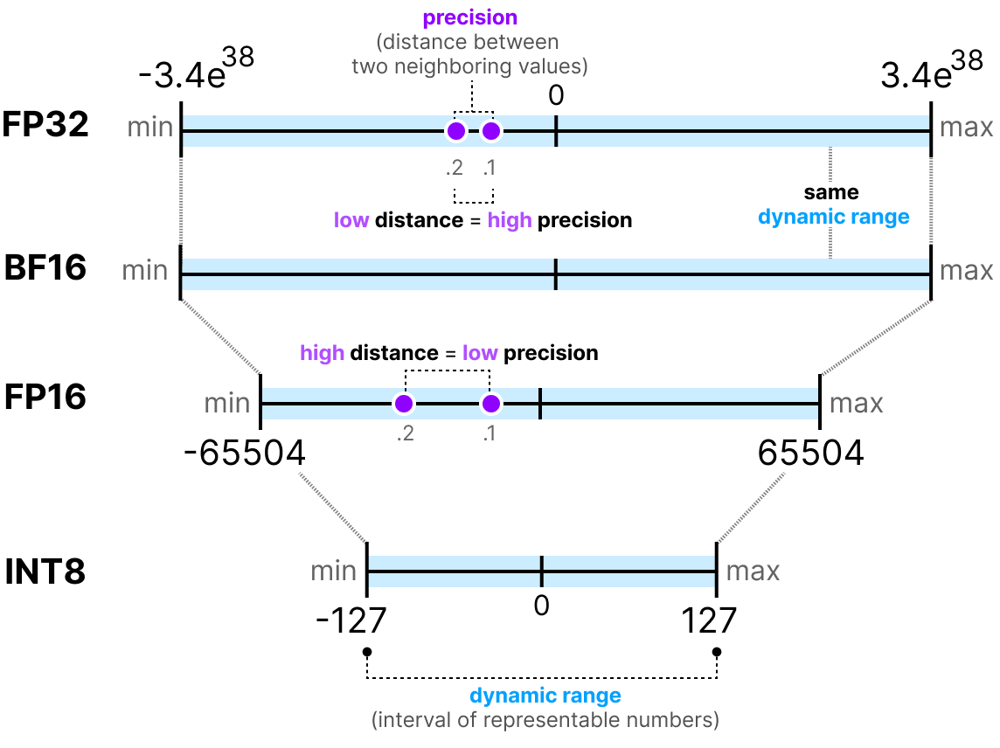
Dynamic range — the interval of representable magnitudes (dominated by exponent bits; the earlier min/max slide has the small mantissa contribution too). Precision — the gap between two neighboring representable values (set by mantissa bits, for floats). BF16 trades FP16's precision for FP32's exponent range; INT8 has neither an exponent nor a mantissa — its whole range is fixed and evenly spaced.
The memory cost of a data type
Every parameter costs its bit-width, no more and no less:
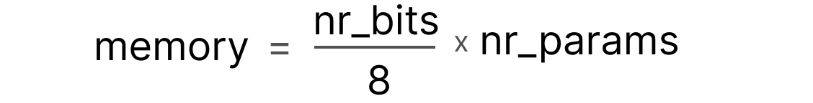
$\text{nr\_bits}$ — bits per stored parameter ($32$ for FP32, $16$ for FP16/BF16, $8$ for INT8, …); $\text{nr\_params}$ — the model's total parameter count; dividing by $8$ converts bits to bytes.
A 70-billion-parameter model, in memory
Applying the formula from the previous slide to a 70B-parameter model at three precisions:
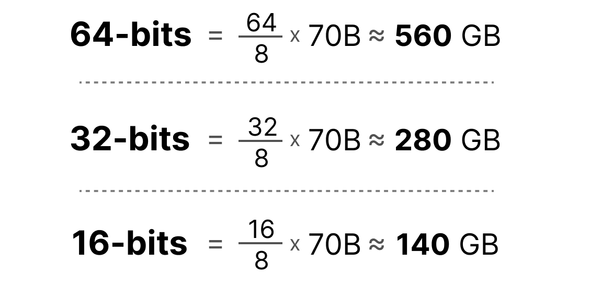
Halving the bit-width exactly halves the memory — going from FP32 to FP16/BF16 alone turns a model that needs 280GB (more than any single consumer GPU) into one that needs 140GB. Quantization pushes this idea further, down to 8 or even 4 bits per weight.
What is quantization?
Quantization maps each original value onto the nearest point of a coarser, lower-granularity grid — trading precision for a far smaller representation:

The gap between the original weight and its quantized snap-point is the quantization error — small enough, in aggregate across billions of weights, that the model's behavior barely changes, even though every individual number moved.
The same idea, in an image
Reducing a photo from millions of colors to an 8-color palette is the same operation — every pixel snaps to its nearest available color:
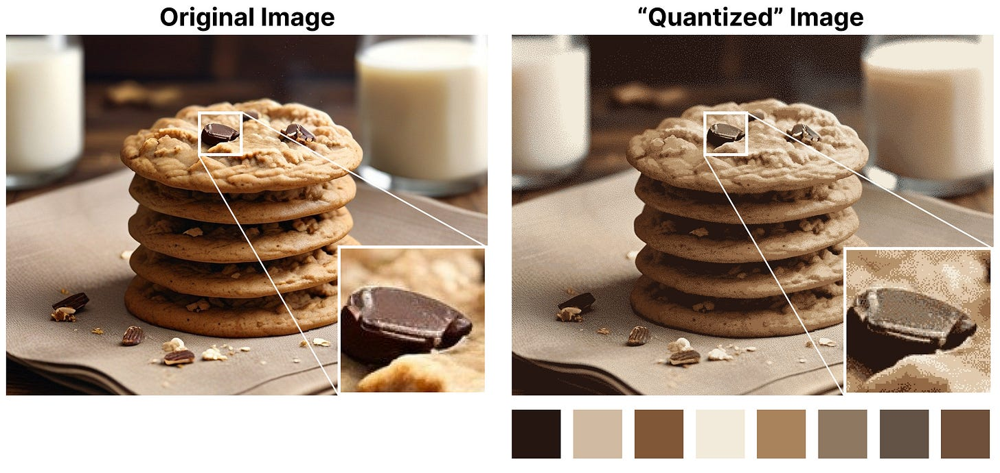
Structure survives (the cookies are still clearly cookies); fine gradation is what's lost — exactly the trade-off model weight quantization makes.
BF16: FP32's range, less precision
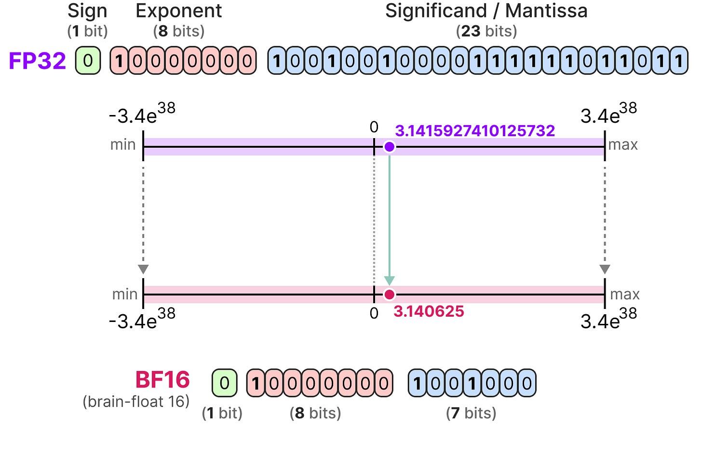
BF16 keeps FP32's 8 exponent bits (same dynamic range, same min/max) but cuts the mantissa to 7 bits, so it's cheaper to store than FP32 while far less likely to overflow/underflow than FP16 — the reason it's the default training dtype for most modern LLMs.
INT8: a fixed integer grid
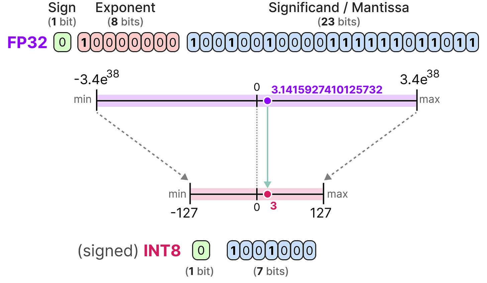
INT8 has no exponent or mantissa — just a sign and 7 bits of magnitude, giving exactly 256 evenly-spaced integers, $-127$ to $127$ (signed). There's no built-in notion of where the decimal point goes; quantization is exactly the scheme that decides that, covered next.
Symmetric quantization
Map the range $[-\alpha,\alpha]$ — centered on the original data's largest magnitude — onto the integer range $[-(2^{b-1}-1),\,2^{b-1}-1]$, so that $0$ always maps to $0$:
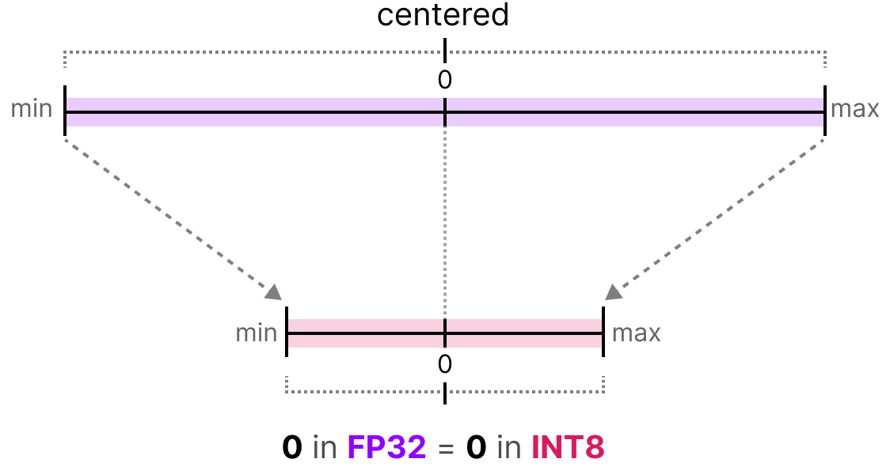
$\alpha$ — the highest absolute value in the tensor being quantized; $b$ — the number of bits per stored value, not bytes ($b=8$ bits $\Rightarrow 2^{b-1}-1=127$, the INT8 range from Part 1); $s$ — the scale factor, real-valued; $x$ — an original FP32 value; $x_{\text{quantized}}$ — the stored integer; $\operatorname{round}(\cdot)$ — round to the nearest integer, same as everyday rounding (e.g. $\operatorname{round}(64.33)=64$, $\operatorname{round}(-89.26)=-89$) — this is the only step that actually loses information; everything else here is exact arithmetic.
Symmetric quantization: a worked example
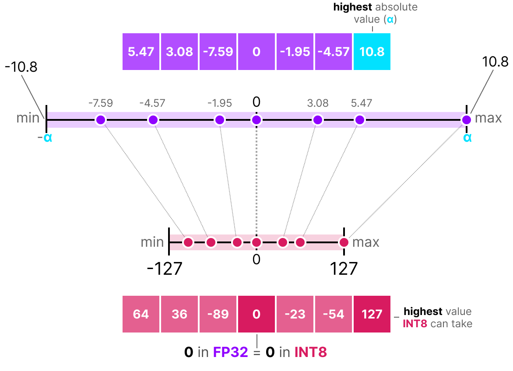
$x=[5.47,\,3.08,\,{-7.59},\,0,\,{-1.95},\,{-4.57},\,10.8]$, so $\alpha=\max|x|=10.8$ and $s=127/10.8=11.76$:
| $x$ | $s\cdot x$ | $x_{\text{quantized}}=\operatorname{round}(s\cdot x)$ |
|---|---|---|
| 5.47 | 64.33 | 64 |
| 3.08 | 36.22 | 36 |
| −7.59 | −89.26 | −89 |
| 0 | 0 | 0 |
| −1.95 | −22.93 | −23 |
| −4.57 | −53.74 | −54 |
| 10.8 | 127.0 | 127 |
Symmetric quantization: dequantizing back
| $x$ | $x_{\text{quantized}}$ | $x_{\text{dequantized}}$ | error |
|---|---|---|---|
| 5.47 | 64 | 5.44 | 0.03 |
| 3.08 | 36 | 3.06 | 0.02 |
| −7.59 | −89 | −7.57 | 0.02 |
| 0 | 0 | 0.00 | 0.00 |
| −1.95 | −23 | −1.96 | 0.01 |
| −4.57 | −54 | −4.59 | 0.02 |
| 10.8 | 127 | 10.80 | 0.00 |
Dividing each stored integer back by $s=11.76$ recovers values close to, but not exactly, the originals. The error is at most about $0.03$ here, and exactly $0$ wherever a value happened to round perfectly — like $10.8$, which mapped straight onto the grid's own edge ($x_{\text{quantized}}=127$) with no rounding at all.
Asymmetric quantization
Symmetric quantization wastes range when data isn't centered on zero. Asymmetric quantization maps the data's actual min/max, $[\beta,\alpha]$, onto the full integer range and shifts the origin with a zero-point $z$:
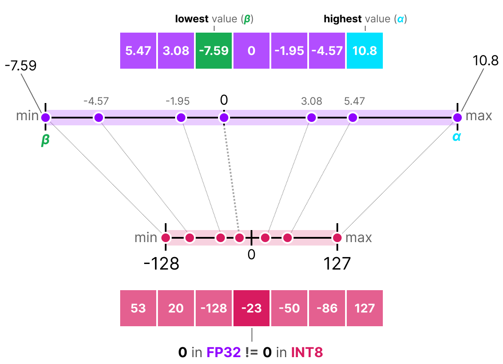
$\beta$ — the lowest value in the tensor; $\alpha$ — the highest value; $z$ — the integer zero-point, the stored code that FP32's $0$ maps to (generally $\ne 0$, unlike the symmetric case).
$s$ alone only fixes the interval's width to match the integer range's width — after scaling, $\beta$ and $\alpha$ have the right spread but not necessarily the right position. $z$ is the leftover shift needed to slide $s\cdot\beta$ exactly onto the integer floor $-2^{b-1}$: $z=-2^{b-1}-s\cdot\beta$. Setting $x=0$ in $s\cdot x+z$ then gives $z$ itself — the same shift that aligns the minimum also happens to be where zero lands, which is why it's called the zero-point.
Asymmetric quantization: a worked example
Same vector as before: $\beta=\min(x)=-7.59$, $\alpha=\max(x)=10.8$, so $s=255/18.39=13.86$ and $z=\operatorname{round}(13.86\times7.59)-128=105-128=-23$:
| $x$ | $s\cdot x+z$ | $x_{\text{quantized}}$ | dequantized $(x_{\text{quantized}}-z)/s$ |
|---|---|---|---|
| 5.47 | 52.82 | 53 | 5.481 |
| 3.08 | 19.69 | 20 | 3.101 |
| −7.59 | −128.19 | −128 (clamped) | −7.572 |
| 0 | −23 | −23 | 0.0 |
| −1.95 | −50.03 | −50 | −1.947 |
| −4.57 | −86.34 | −86 | −4.543 |
| 10.8 | 126.7 | 127 | 10.818 |
Note $-7.59$ needed $-128.19$, outside even the asymmetric grid's floor — it gets clamped to $-128$, the largest quantization error in this example.
Symmetric vs. asymmetric, side by side
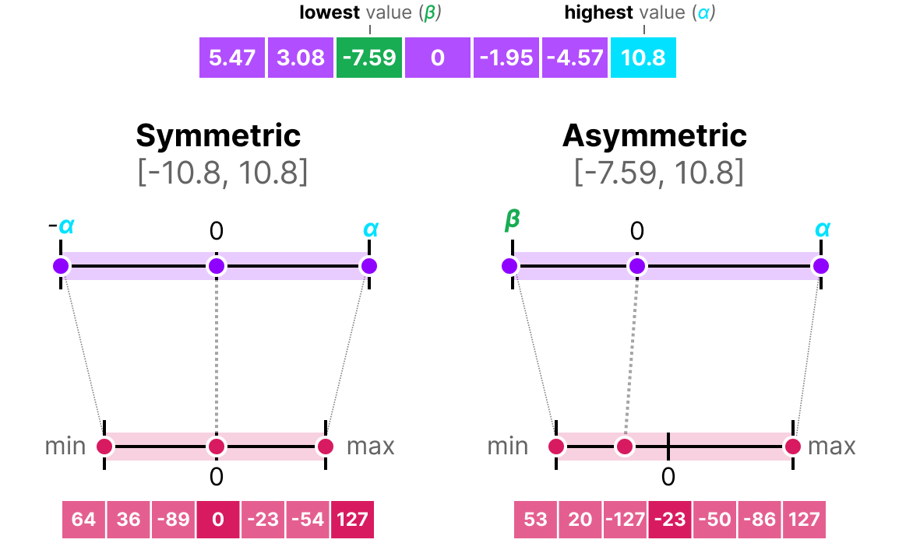
Asymmetric quantization uses the integer grid more fully whenever the data isn't centered on zero — at the cost of tracking one extra number, $z$, and a slightly more expensive dequantization step.
One outlier ruins the whole grid
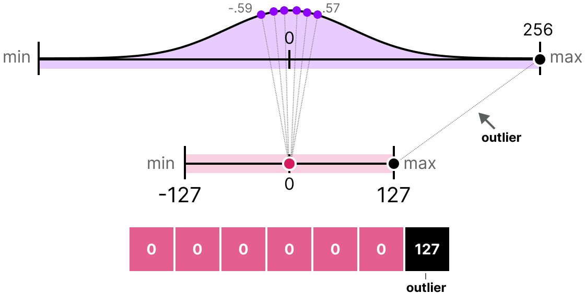
$\alpha=\max|x|$ is set entirely by the single outlier ($256$), so $s=127/256\approx0.496$ is tiny — every other value, all under $1.0$ in magnitude, rounds straight down to 0. A single extreme value can silently destroy the precision of every normal value sharing its scale factor.
Clipping: trading outlier accuracy for the rest
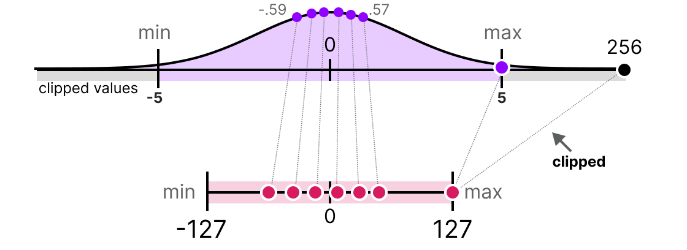
Clip the range to $[-5,5]$ before computing $\alpha$: the outlier gets truncated to $5$ (and quantizes with large error), but $s=127/5=25.4$ is now large enough that every normal value gets a distinct, meaningful integer code instead of collapsing to $0$. Choosing where to clip is exactly what calibration (next) is for.
Calibration: what range do we clip to?
Every quantization scheme needs a $[\beta,\alpha]$ (or $\alpha$) range before it can compute $s$ — calibration is how that range gets chosen, and it looks different for the two kinds of values a network holds:
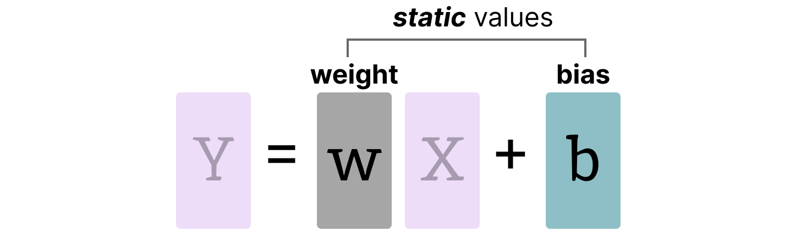
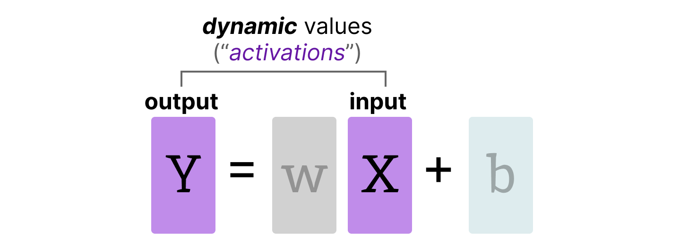
Weights are fixed after training — their range can be measured once, in advance. Activations depend on the current input, so their range shifts on every forward pass — calibrating them means deciding whether to measure that range on the fly or fix it ahead of time (Part 3).
Min/max isn't the only calibration choice
Using the tensor's literal min/max as $[\beta,\alpha]$ is simplest, but a single outlier (as just seen) can force a huge $\alpha$ and waste precision on everything else. An alternative: pick $\alpha$ from a percentile of the distribution instead of its true maximum, deliberately clipping rare extreme values:
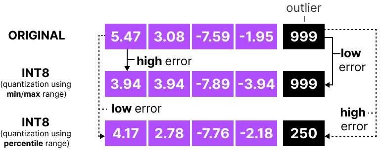
With an outlier of $999$ in the tensor, the full min/max range forces high error onto every normal value; a percentile-based range accepts a large error on the outlier itself in exchange for much lower error everywhere else — the same trade as the clipping example, chosen automatically from the data's distribution rather than a hand-picked cutoff. (Other calibration criteria — minimizing mean-squared error, or KL-divergence between original and quantized distributions — make the same trade using a different statistical target.)
Dynamic quantization
Weights are quantized once, offline, using their fixed range. Activations don't have a fixed range — dynamic quantization handles this by computing $\alpha,\beta$ freshly from the actual values flowing through, on every single forward pass:
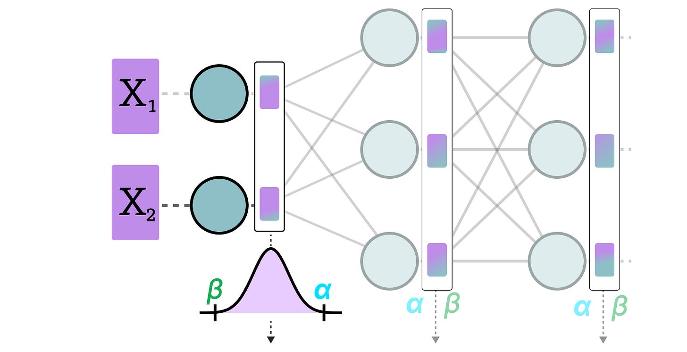
No calibration data needed ahead of time, and the range always matches the real input — at the cost of computing $s$ and $z$ live, for every layer, on every inference call.
Dynamic quantization: what happens per layer
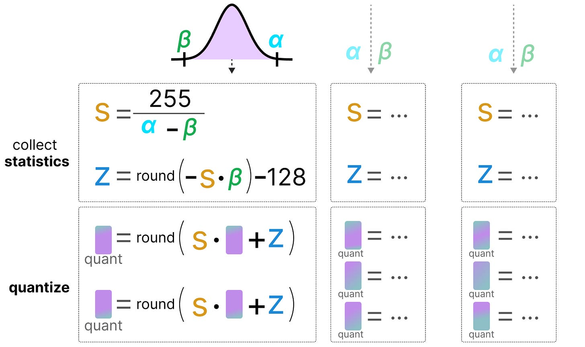
Each layer runs the same two steps independently, in sequence: collect this layer's $\alpha,\beta$ from the activations just produced, then quantize them with the resulting $s,z$ — the exact asymmetric formulas from Part 2, just re-run at every layer boundary instead of once in advance.
Static quantization
Static quantization avoids computing $s,z$ at inference time at all: run a small calibration dataset through the model once, offline, record the activation distributions it produces, and fix $\alpha,\beta$ (and hence $s,z$) from that — before any real inference happens:
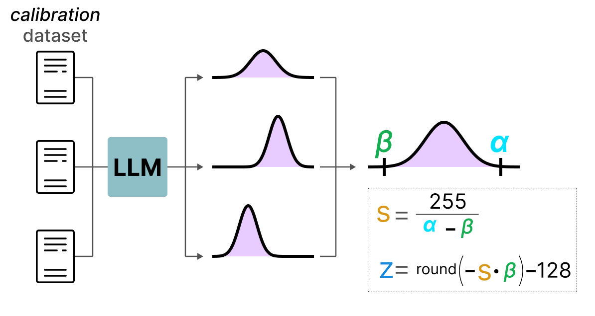
Inference is now as cheap as weight quantization — no per-layer statistics collection — but the fixed range is only as good as how representative the calibration dataset was.
GPTQ: quantizing one layer at a time
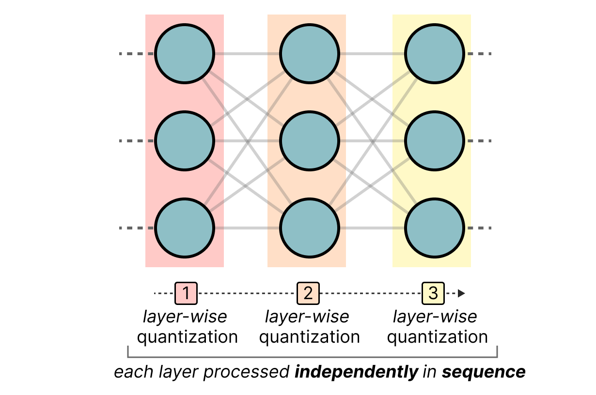
GPTQ quantizes a pretrained model layer by layer, each processed independently and in sequence — turning "quantize the whole network" into a series of smaller, self-contained per-layer problems: which 4-bit values best reconstruct this one layer's original outputs?
GPTQ: which weights matter most
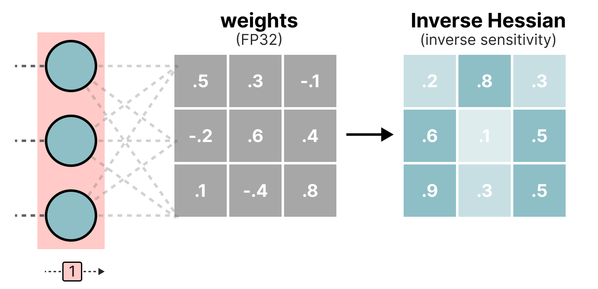
Not every weight matters equally to the layer's output — the (inverse) Hessian of the layer's reconstruction error tells GPTQ exactly how sensitive the output is to rounding each particular weight. A weight with a large inverse-Hessian entry can absorb more rounding error for the same output impact; this sensitivity is what later decides how much of one weight's rounding error gets pushed onto the others.
GPTQ: quantize one weight, measure the damage
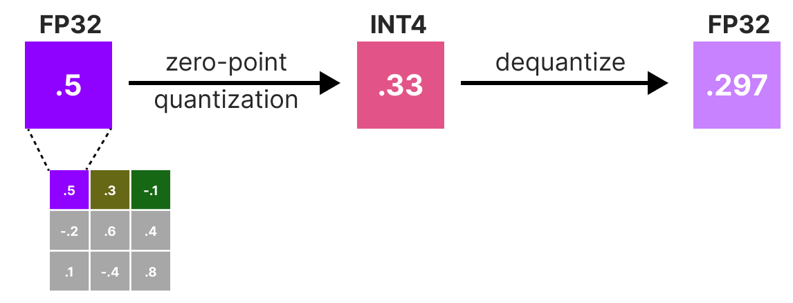
Quantize the row's first weight ($0.5\to 0.33$ in 4-bit, dequantized back to $\hat w=0.297$) exactly as in Part 2. $e=w-\hat w=0.5-0.297=0.203$ is the rounding error this one weight introduced — GPTQ's key idea is that this error doesn't have to be wasted: it can be redistributed onto the weights not yet quantized.
GPTQ: redistributing the error
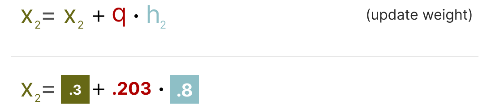
$e=0.203$ — the rounding error from the previous slide; $h_j$ — how sensitive the output is to weight $j$ (from the inverse-Hessian row). Weight 2, with $h_2=0.8$: $w_2\leftarrow 0.3+0.203\times0.8=0.4624$ — nudged before it gets quantized itself, so its own rounding starts from a value that already compensates for weight 1's mistake.
GPTQ: one weight at a time, down the row
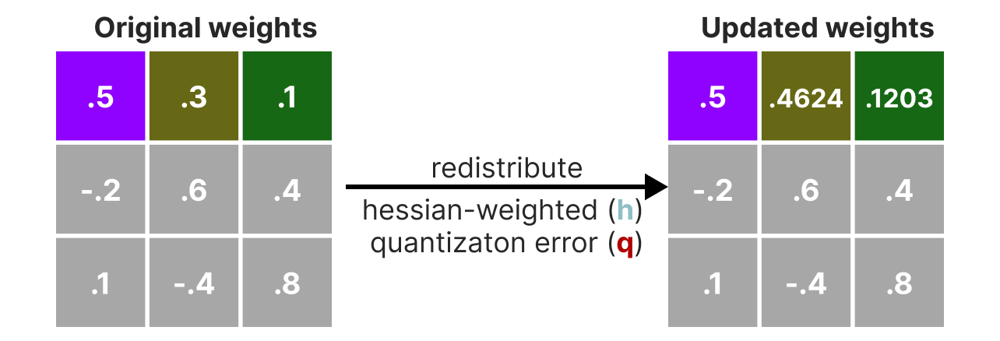
Every not-yet-quantized weight in the row absorbs a share of the error, proportional to its own sensitivity $h_j$, before its turn to be quantized comes up. Repeating quantize-measure-redistribute across the whole row, then the whole layer, is what lets GPTQ push weights to 3–4 bits with far less accuracy loss than quantizing each one independently.
GGUF: blocks inside blocks
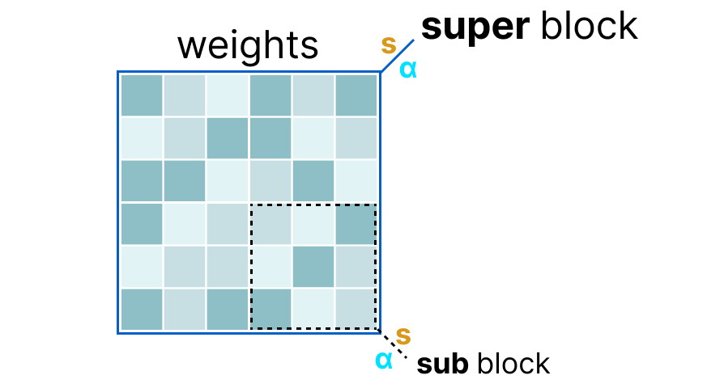
Rather than one scale per fixed-size block (Part 2), GGUF's k-quants nest two levels: a super-block of weights is split into several sub-blocks, and every sub-block gets its own scale — finer-grained than one scale for the whole super-block, without paying for a full scale per individual weight.
GGUF: even the scales get quantized
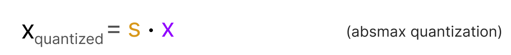
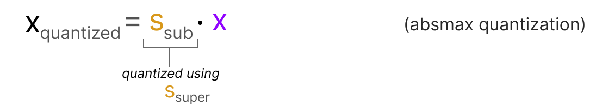
Ordinary absmax quantization (Part 2) needs one real-valued scale per block. GGUF goes one step further: each sub-block's scale $s_{\text{sub}}$ is itself quantized, using the super-block's own scale $s_{\text{super}}$ — the same double-quantization idea QLoRA uses for its block constants, applied to an integer format instead of NF4.
GGUF: quantization levels in practice
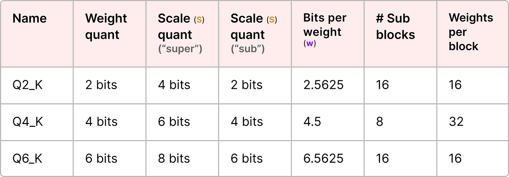
Each named GGUF level trades off weight bit-width against how finely the scales themselves
are stored — Q4_K's 4-bit weights end up costing 4.5 bits/weight
once its super- and sub-block scales are counted in, not exactly 4; Q2_K and
Q6_K follow the same accounting at their own bit-widths.
Quantization-aware training
Everything so far quantizes a model after it's already trained (post-training quantization, PTQ). Quantization-aware training (QAT) instead trains the model already knowing it will be quantized — quantization parameters ($s,\alpha,\beta,z$) are learned during the backward pass itself, alongside the weights:
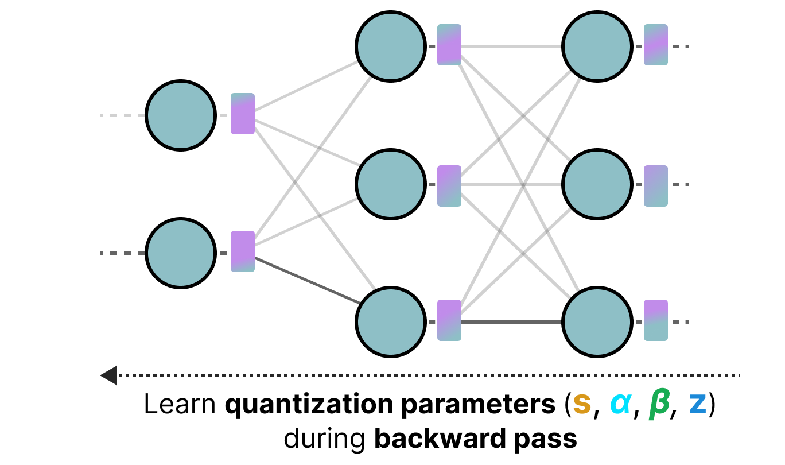
The network's weights adapt around the quantization grid, instead of the grid being imposed on weights that never knew it was coming.
Training through a "fake" quantization step
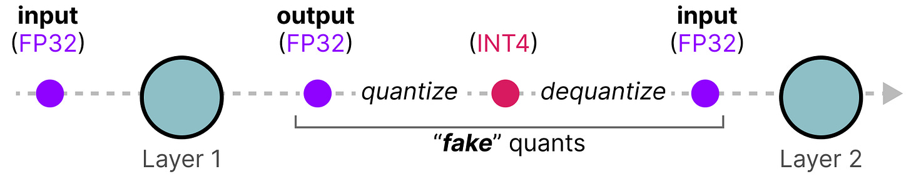
Between layers, every activation is quantized to INT4 and immediately dequantized back to FP32 before continuing — a "fake" quantization step. The forward pass sees the same rounding it would see at real low-bit inference; gradients still flow through it in FP32, so the network learns weights that are robust to that specific rounding.
Why this produces better minima
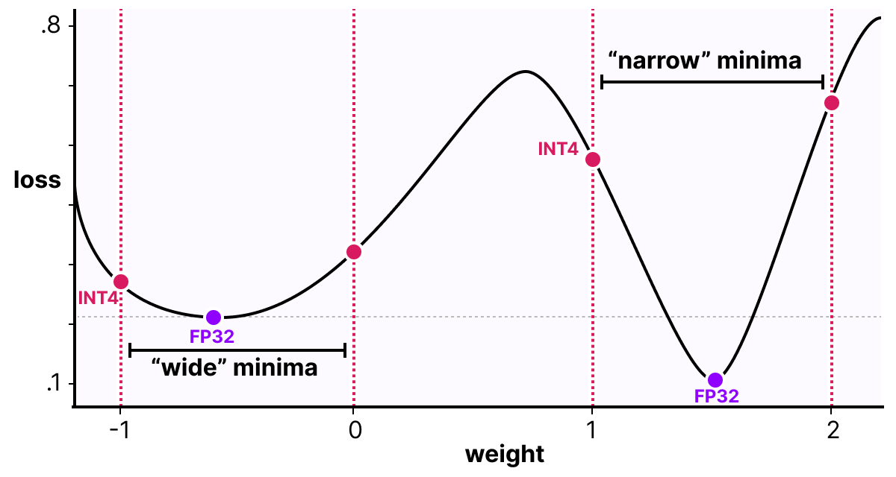
A wide minimum stays low-loss even if the weight shifts a bit (as quantization forces it to); a narrow minimum's loss shoots up under the same shift. Ordinary training has no reason to prefer one over the other — it just finds the lowest point it can, wide or narrow.
QAT seeks wide minima on purpose
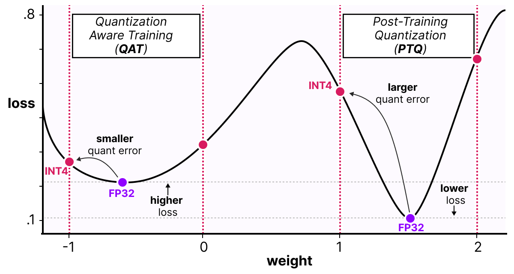
Because QAT's forward pass already includes the rounding step, gradient descent is steered away from narrow minima that quantization would wreck, and into wide ones that tolerate it — a smaller quantization error for the same bit-width, entirely because training saw the rounding coming. PTQ, quantizing after the fact, has no such guarantee and can land its rounded weight in a narrow, high-loss minimum.
BitNet: replacing Linear with BitLinear
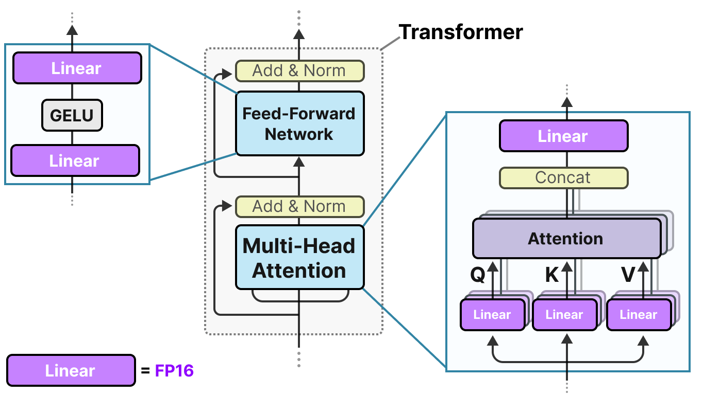
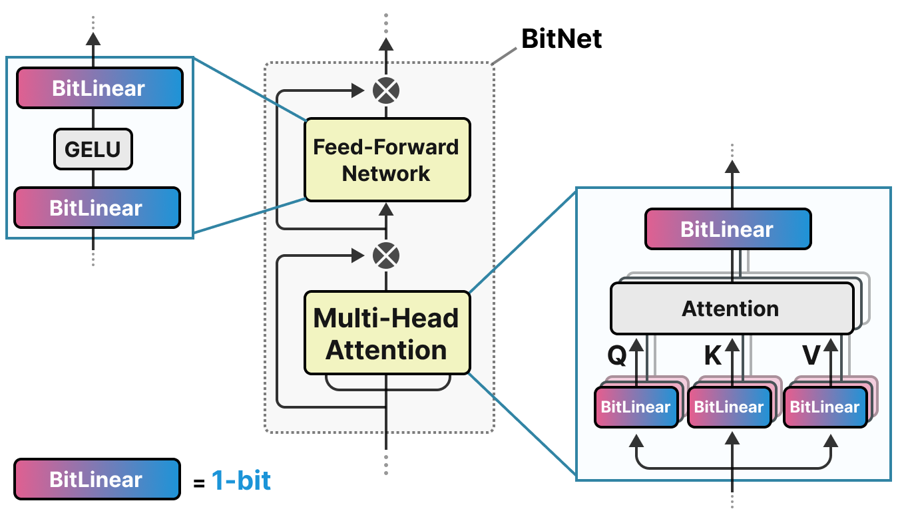
BitNet is QAT taken to its extreme: every ordinary Linear layer (FP16 weights)
in a Transformer is swapped for a BitLinear layer, whose weights are trained
to live in just 1 bit from the start.
BitLinear: 1-bit weights, INT8 activations
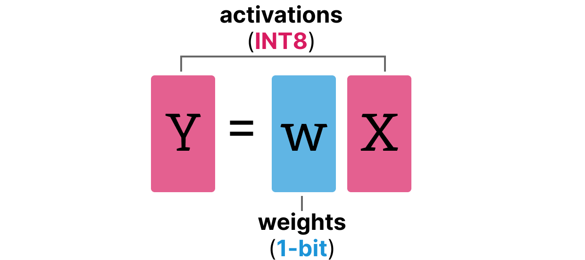
The matrix multiply itself is unchanged, $Y=wX$ — only the precision of $w$ and $X$ changes. Weights are quantized to $1$ bit; activations to INT8 (finer than the weights, since activations vary per input and carry more information to preserve).
BitLinear: the full pipeline
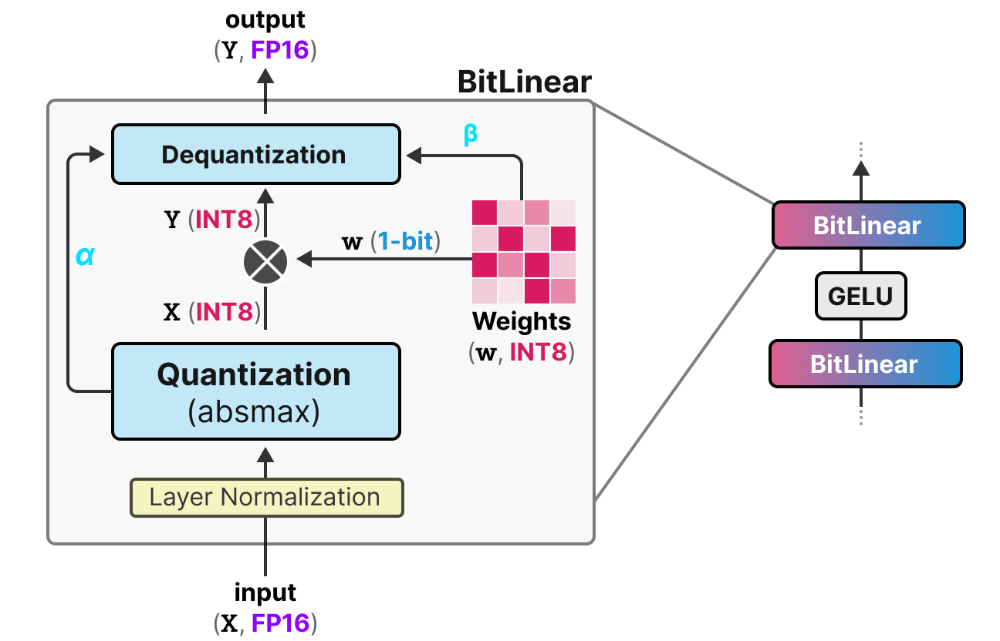
Input arrives in FP16, gets layer-normalized, then quantized (absmax, to INT8); weights are held in 1-bit; their product $Y$ (INT8) is dequantized back to FP16 using the tracked scale factors $\alpha,\beta$ before leaving the layer — every other layer downstream still sees ordinary FP16 activations.
BitNet: quantizing weights to ±1
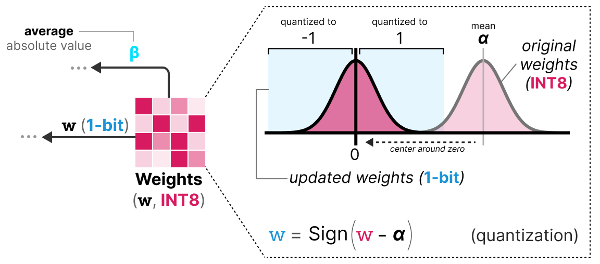
$\alpha$ — the mean weight value in the tensor. Centering on the mean first (not the raw weights) ensures roughly half the weights land on each side of $0$ before the sign function collapses everything to exactly $-1$ or $1$ — the full 1-bit weight.
BitNet: quantizing activations to INT8
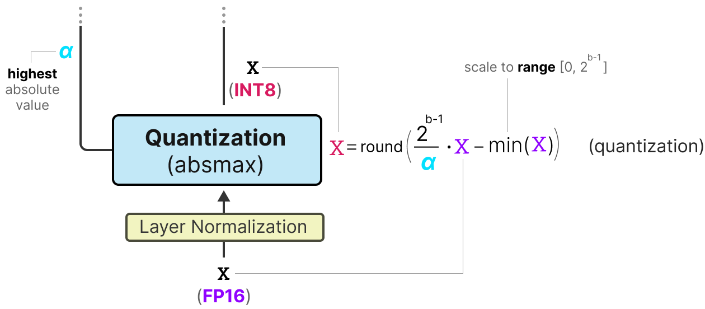
$\alpha$ — the highest absolute activation value; $b=8$. Layer normalization runs first, so activations already have a well-behaved, predictable range before this absmax-style scaling maps them into INT8.
BitNet: recovering an FP16 output
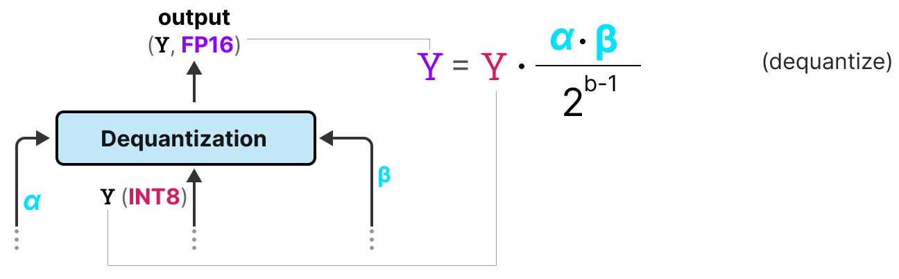
$\alpha$ — the weight-quantization scale from a few slides back; $\beta$ — the activation-quantization scale just used. Multiplying by both undoes both roundings at once, handing the next (ordinary, FP16) layer a normal-looking activation.
BitNet b1.58: matmul without multiplying
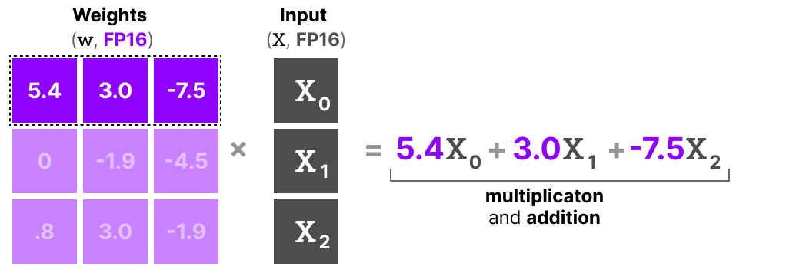
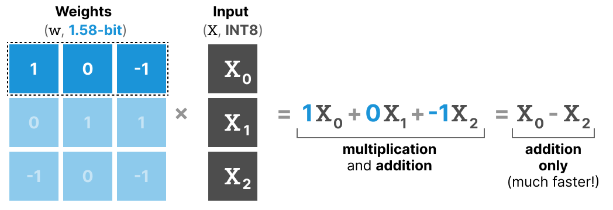
With weights restricted to $\{-1,0,1\}$ instead of just $\{-1,1\}$, each term in the dot product is either $+X_i$, $-X_i$, or dropped entirely — the multiplication disappears, leaving only additions and subtractions. Explicitly allowing $0$ is what earns the extra $0.58$ bit ($\log_2 3\approx1.58$) over BitNet's strict 1-bit version.
BitNet b1.58: absmean quantization
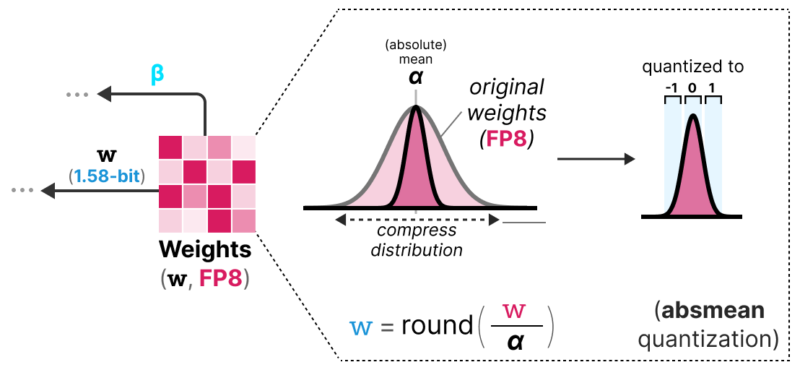
Dividing by the mean absolute weight (not the max, as in earlier absmax schemes) compresses the distribution so that most values round to $0$, and only the largest round to $\pm1$ — turning the weight tensor sparse as a side effect of quantizing it.
Reading list
- Grootendorst, A Visual Guide to Quantization — the source for every figure in this deck.
- Frantar et al. 2022, GPTQ: Accurate Post-Training Quantization for Generative Pre-trained Transformers — arXiv:2210.17323.
- Dettmers et al. 2022, LLM.int8(): 8-bit Matrix Multiplication for Transformers at Scale — arXiv:2208.07339.
- Wang et al. 2023, BitNet: Scaling 1-bit Transformers for Large Language Models — arXiv:2310.11453.
- Ma et al. 2024, The Era of 1-bit LLMs: All Large Language Models are in 1.58 Bits — arXiv:2402.17764.
- Gerganov et al., GGUF / llama.cpp — the k-quant format (
Q2_K,Q4_K,Q6_K, …) used throughout Part 3.